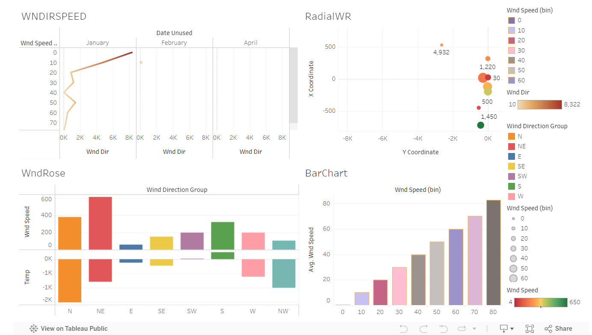

Week 3
Saturday
Visualization Of National Centers For Environmental Information (NCEI) Dataset
The context of the dataset
The dataset is a collection of meteorological observations from a specific weather station identified as “KJELLER AIRPORT, NO”. This dataset is used by the National Center For Environmental Information (NCEI) for studying weather trends, creating predictive models, or understanding how atmospheric conditions change over time.
Based on the column names and data structure, the dataset consists of:
1. Geographical Information: - STATION, LATITUDE, LONGITUDE, ELEVATION: These columns provide details about the specific location where the weather observations were recorded.
2. Time-based Observations: - Date/Time: The dataset records weather data at hourly intervals, providing a time-series structure for analyzing weather patterns.
3. Meteorological Data: - SLP (Sea Level Pressure): Atmospheric pressure at sea level, which is useful in studying weather systems, such as predicting storm conditions or high-pressure systems. - WND, TMP, VIS, DEW, etc.: These columns seem to encode data on wind speed/direction, temperature, visibility, dew point, and other weather-related variables. They are stored in a format that requires further decoding.
4. Purpose: - It would appear that the is used for tracking and analyzing weather conditions over time at the specified station. It could be useful for forecasting, climate studies, or aviation-related weather monitoring.
The source and link to the dataset - (csv)
The source is National Centre For Environment Information (NCEI)
https://www.ncei.noaa.gov/data/global-hourly/access/2024/01466099999.csv
Name : 2024-08-26 10:32 - 93K
Original dataset consists of 301 rows and 25 columns.
Cleaned dataset consists of 301 rows and 28 columns.
9 columns were deleted(correlation with other columns not clear and also not necessary for this analysis)
5 of the original columns were decoded into 11 additional columns:
Wind is decoded into
Wind_Direction
Wind_Speed_Tenths
Wind_Speed_Quality
Wind_Speed_Meters
Wind_Type
Temperature is decoded into
Temperature_Celsius
Temperature_Quality
Sea_Level_Pressure_hPa is decoded into
Sea_Level_Pressure_hPa
SLP_Quality
Dew is decoded into 2 columns
Dew_Point_Celsius
Dew_Point_Quality
Date was seperated to 2 columns
Date
Time
Data Cleaning Methods Employed
###Column Selection
Out of the original 25 columns, 9 were found to be missing chunks of data. These 9 columns were dropped using Python and importing Pandas as pd. I then fed the NCEI dataset into Python using “data = pd.read_csv(r’C:\path_to_the_dataset_on_my PC. csv)”
I used python to print the data column heads - print(data.head()))
I had it print null data by “print(data.isnull().sum())
I also had python drop the null columns “data_cleaned = data.dropna())
- Total 9 columns were dropped.Decoding Encoded Data: Date Conversion
Converted DATE Column to Datetime: The DATE column originally combined both dated and time. I split this into two separate columns by using the text to column function in excel.
Sea Level Pressure (SLP) Conversion Reformatted and Converted SLP: The SLP column contained values in string format with commas as delimiters. I decoded this using the Excel’s text to column function. The same method was used to decode the Wind, Temperature, and Dew variables.
Adding visualization to quarto document, including label and captions.
Visualizatin in Tableau. Throughout this third week, I worked extensively with Tableau, finding it to be a highly enjoyable and powerful visualization tool. While there is a lot to learn within a short time, Tableau’s detailed and visually appealing outputs make the effort worthwhile. Although Tableau incorporates some object-oriented programming concepts, it’s not something we needed to delve into deeply during this period.
This week, I created two notable visualizations using the NCEI dataset: a static wind rose and a radial wind rose. Tableau initially struggled with generating a traditional wind rose, so I opted to create a radial one instead (Both created programtically). The wind rose, intended to mimic the function of a windmill for weather observation, serves as a graphical tool to display the distribution of wind speed and direction over a specific period. It provides a concise visual summary of how wind speed and direction are typically distributed at a location, aiding in identifying prevailing wind patterns. The wind mill describes my dataset perfectly. Below is a copy of my dashboard using Tableau.

Above Tableau dashboard displays various visualizations of the weather center data, offering insights into wind patterns and conditions:
WNDIRSPEED: This plot aims to illustrate the wind speed over time, broken down by months. It shows how wind speed fluctuates throughout different months, with January showing a noticeable peak. This could indicate periods of higher wind activity during certain months.
RadialWR (Radial Wind Rose): The radial wind rose displays the distribution of wind direction and speed in a circular format, indicating the frequency and strength of winds coming from various directions. It helps in identifying the prevailing wind directions and their intensities.
WndRose (Wind Rose): This is a bar chart version of a wind rose, categorizing wind speed by direction groups (N, NE, E, etc.). It shows which directions have higher wind speeds on average, indicating that winds from the NE and S directions are particularly strong in this dataset. Additionally, i have included temperature data, i supect a potential correlation between wind direction and temperature changes.
BarChart: This chart displays the average wind speed across different bins. It shows how often different wind speed ranges occur, highlighting that higher speeds (around 80) are less frequent but still present, indicating a varied wind speed distribution.
Overall Interpretation: - The visualizations suggest that wind speed and direction vary across time and direction, with some directions (NE, S) showing higher wind speeds. - There might be a relationship between wind direction and temperature, as seen in the Wind Rose plot. - The radial wind rose helps identify the most common wind directions and their speeds, which could be useful for understanding local weather patterns or for purposes like wind energy assessments.
These plots collectively provide a comprehensive view of the wind and temperature data, aiding in the analysis of prevailing wind conditions and their potential impact on the environment.